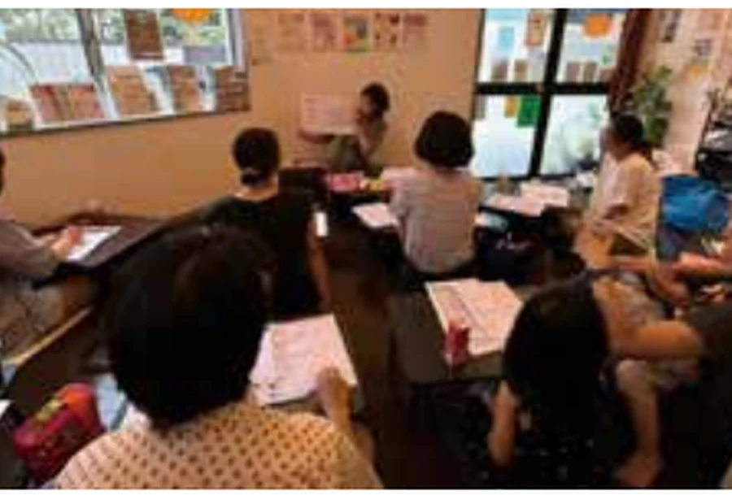
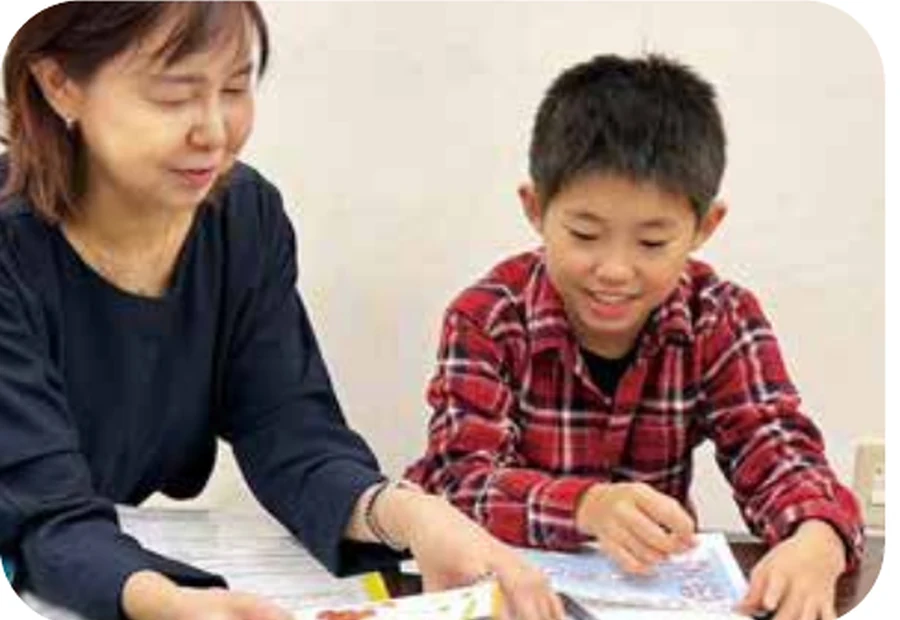
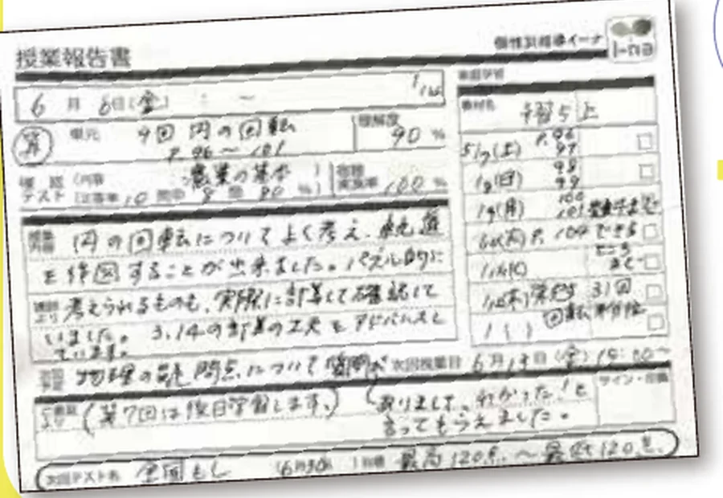
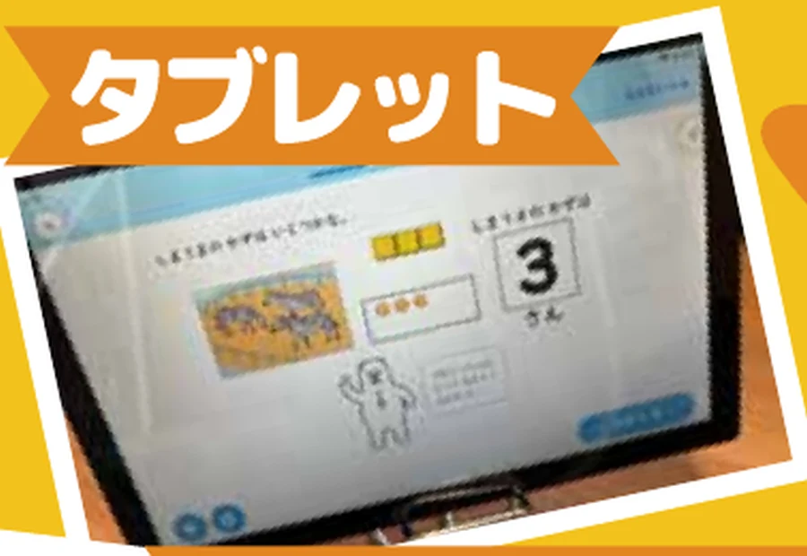
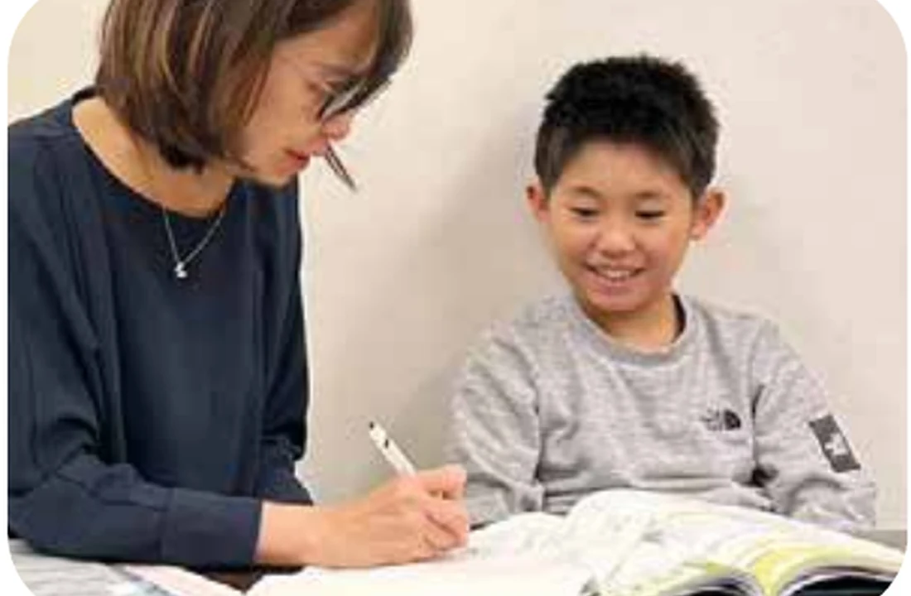
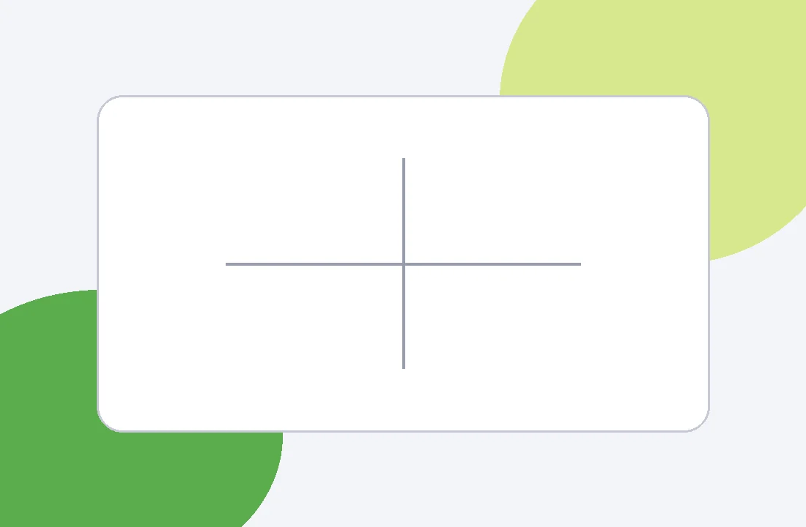
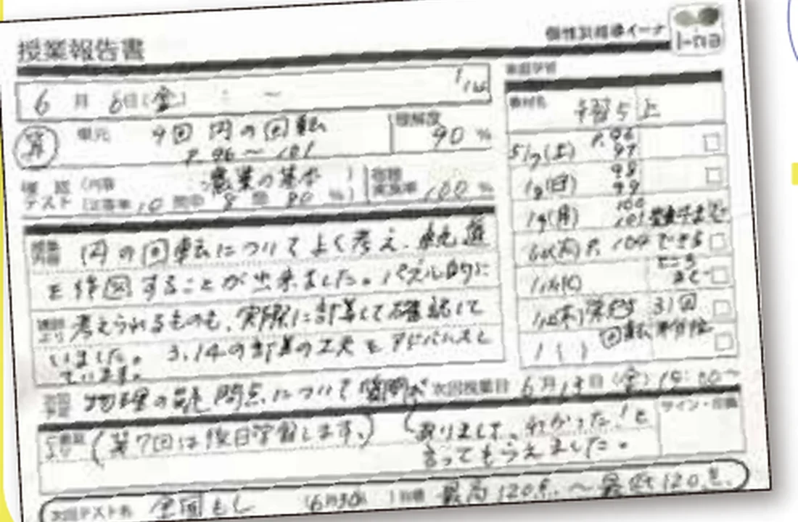
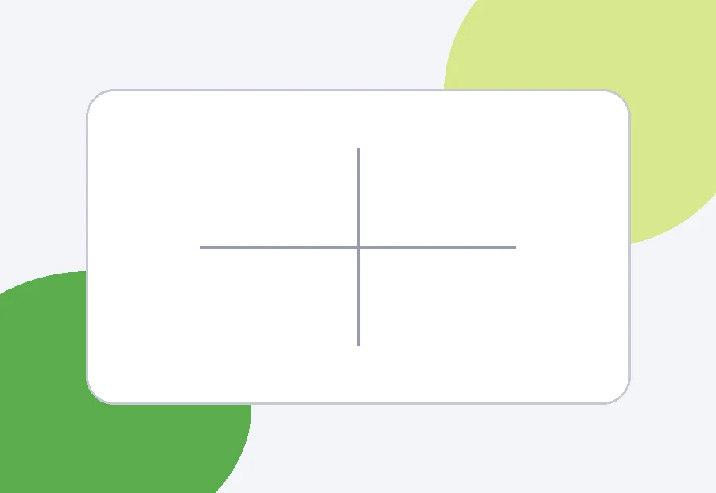
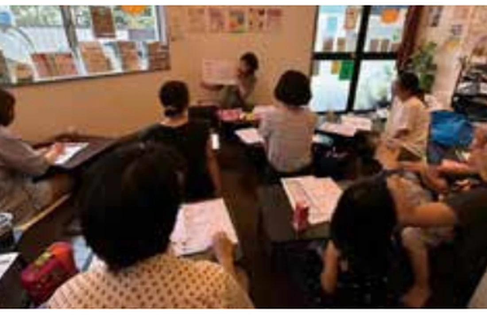

集団授業では質問しにくい
周囲を気にせず、分からないところから確認したい。

周囲を気にせず、分からないところから確認したい。

説明の仕方や進度を、お子さまに合わせてほしい。

授業外の学習も、無理のない形で整えたい。

会話をしながら、理解度を確認するオンライン授業です。
一律の進め方ではなく、お子さまの様子を確かめながら授業内容を調整します。

会話をしながら理解度を確認し、分からない部分は説明方法を変えて進めます。

教材の難易度、予習と復習の配分、進度、宿題量をお子さまごとに調整します。

授業報告と小さな目標設定を通じて、学習の積み重ねを支えます。
対面授業では、集中、宿題への取り組み、テスト目標の達成などをシールで可視化しています。シールを集めてもらえる小さなプレゼントも、継続のきっかけになっています。
実際のお子さまや保護者さまの声を掲載するための枠です。

「前よりも、分からないことを自分から聞けるようになりました」
体験談本文、学年、掲載許可を確認した写真へ差し替えます。
通常期間は、対面授業とオンライン授業を開講しています。
文京区駒込の親子カフェhahacoで行う対面授業です。
渋谷区笹塚2-21-2。部屋番号はお申し込み後に個別にご案内します。
会話をしながら理解度を確認するオンライン個別指導です。自宅から受講できます。
授業だけでなく、家庭学習と保護者さまへの共有まで継続して支えます。

目標と理解度に合わせて、教材の難易度、予習と復習の配分、進度を調整します。

毎回の授業内容、理解度、次の課題を保護者さまへ共有します。

宿題を日割りでお出しします。量と内容は、保護者さま、お子さまと細かく相談して決めます。

最低年3回、受験を控えるお子さまは必要に応じて行います。対面、オンライン、電話、LINEに対応します。
対面面談の場合はワンドリンクをご負担ください。
学校行事や急な体調不良の場合、授業開始2時間前までに保護者さまからお申し出いただければ、無料で別日に振り替えられます。
振替は対面授業の空きコマ、またはオンライン授業でご案内します。振替授業の再振替はできません。概ね2か月以内にお振り替えください。
ご紹介によるご入会の場合、ご紹介者さまへ10,000円分の追加授業受講券を進呈し、ご入会者さまは入会金無料となります。
ご申告制です。適用条件はお問い合わせください。
受験情報に関する講座やアート教室を定期的に行っています。
例：「どうする？！中学受験（検）塾選び・志望校選び講座」「テクスチャーアート教室」

受験情報だけでなく、お子さまが手を動かしながら学べる企画も行っています。開催情報はLINEやInstagramでご案内します。
大手個別学習塾の元教室長。保護者個人面談を多数実施し、中学受験・高校受験を控えるお子さまを中心に、一人ひとりに合う学び方を提案してきました。
個別指導とアートの経験を生かし、説明方法や教材を一つに決めつけず、お子さまの「分かる」を積み重ねます。
ご相談いただけます。WISC等の検査結果をお持ちの場合は、保護者さまの同意のもとでご共有ください。得意・苦手の傾向を学習計画の参考にし、お子さまに合う授業方法を検討します。
イーナは医療・療育機関ではなく、診断や検査結果の医学的な判定は行いません。
診断の有無にかかわらずご相談いただけます。保護者さまから見た学習の様子、学校の先生からのコメント、ノート、カラーテスト、模試、成績表などをご共有ください。体験授業での様子も踏まえて、お子さまに合うカリキュラムを作成します。
会話をしながら、理解度を確認して進めます。
学校行事や急な体調不良の場合、授業開始2時間前までに保護者さまからお申し出いただければ、無料で別日に振り替えられる制度です。
対面授業の空きコマ、またはZoom等を利用したオンライン授業をご案内します。振替授業の再振替はできません。概ね2か月以内にお振り替えください。
ノート、カラーテスト、模試、成績表などの写真も送れます。現在の状況を確認し、次に必要な相談方法をご案内します。
 スマートフォンで読み取れます
スマートフォンで読み取れます